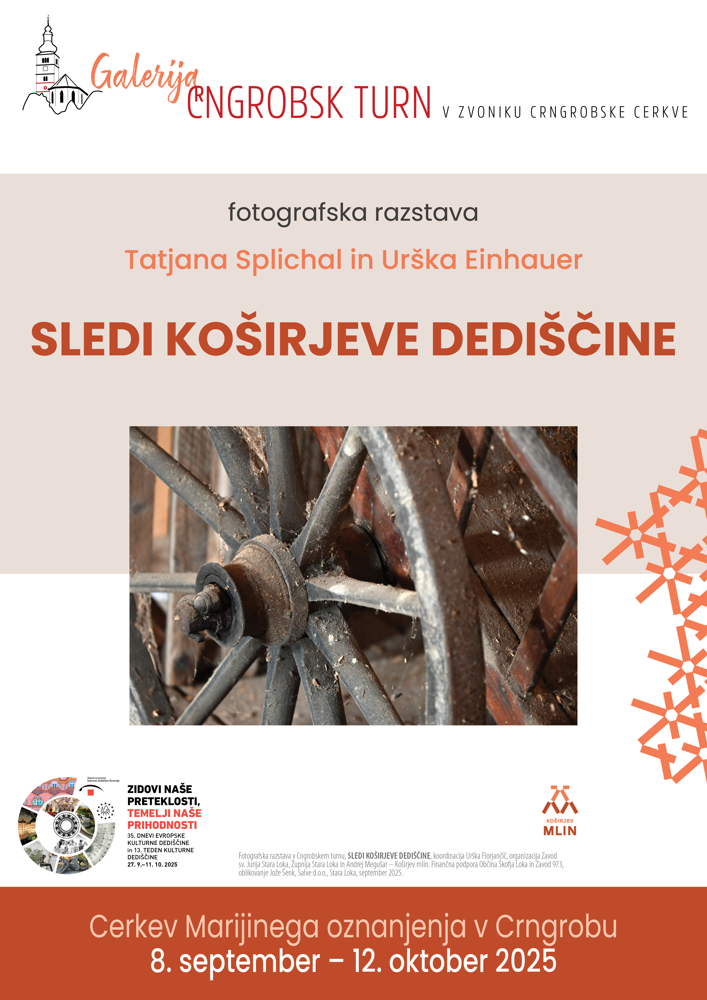

Koširjevina
Zgodba dediščine ob Selški Sori.
Koširjev mlin
Ena najstarejših stavb Kapucinskega predmestja, izpričana leta 1309.
Rojstna hiša
Odkrij umetnost, mlin in svetlobo Škofje Loke.
AKTUALNI DOGODKI

Zgodbe prostora, ljudi in dediščine
Tehnična dediščina
Na kapučinu
Dogodki
Mlinarstvo
Škofjeloški pasijon
Meščanski vrt